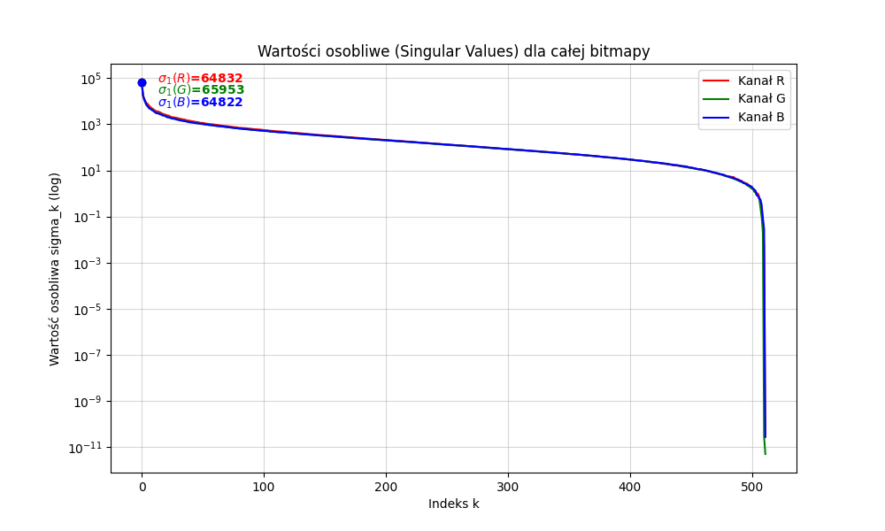
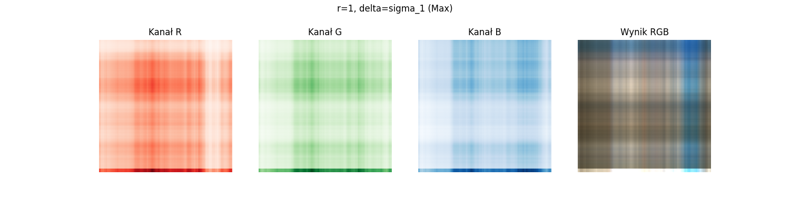
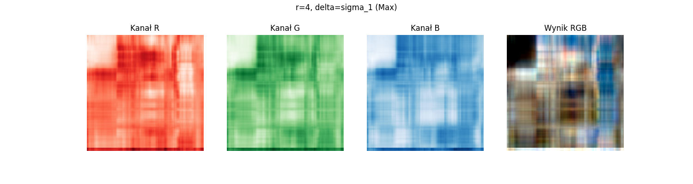
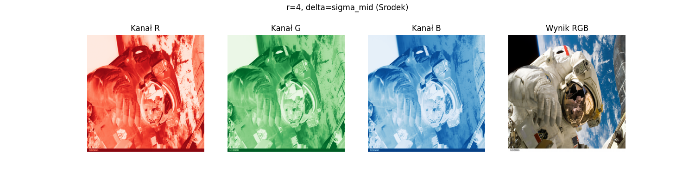

Autorzy: Marek Swakoń, Szymon Tyburczy
Celem laboratorium było zaimplementowanie i przeanalizowanie algorytmu rekurencyjnej kompresji obrazów (Image Compression) wykorzystującego strukturę drzewa czwórkowego (Quadtree) oraz rozkład według wartości osobliwych (SVD).
Zadanie polegało na: 1. Wczytaniu obrazu i rozbiciu go na niezależne kanały RGB. 2. Analizie widma wartości osobliwych dla całego obrazu w celu wyznaczenia punktów odniesienia (σ1, σmid, σlast). 3. Zaimplementowaniu funkcji rekurencyjnej dzielącej obraz na mniejsze bloki w zależności od lokalnej złożoności danych (błędu aproksymacji). 4. Wizualizacji efektów kompresji dla narzuconych zestawów parametrów (r, δ) oraz znalezieniu parametrów optymalnych.
Algorytm opiera się na adaptacyjnym podziale obrazu. Obszary “gładkie” są aproksymowane dużymi blokami o niskim rzędzie, natomiast obszary bogate w detale (krawędzie, tekstury) są rekurencyjnie dzielone na mniejsze kwadraty.
Decyzja o podziale bloku podejmowana jest na podstawie analizy wartości osobliwych macierzy bloku, zgodnie z warunkiem:
σb + 1 < δ
Gdzie: * b (lub r) – maksymalny rząd (rank) kompresji w liściu. * δ – próg błędu (threshold). Jeśli (b + 1)-sza wartość osobliwa jest mniejsza od δ, uznajemy, że błąd odrzucenia reszty informacji jest akceptowalny i nie dzielimy bloku.
Funkcja RecursiveCompressSVD(Macierz A, delta, b):
Oblicz SVD: [U, S, Vt] = svd(A)
JEŚLI (wymiary A < min_size) LUB (S[b] < delta):
# Warunek stopu: Błąd jest mały lub blok jest zbyt mały
Utwórz LIŚĆ.
Skompresuj dane zachowując tylko 'b' pierwszych wartości osobliwych.
W PRZECIWNYM RAZIE:
# Błąd jest zbyt duży -> Dzielimy
Podziel A na 4 ćwiartki: TL, TR, BL, BR.
Dla każdej ćwiartki wywołaj: RecursiveCompressSVD(ćwiartka, delta, b).
Zwróć WĘZEŁ z 4 dziećmi.Zgodnie z wymaganiami, przed przystąpieniem do kompresji rekurencyjnej, wykonano globalny rozkład SVD dla pełnych kanałów R, G, B obrazu wejściowego (512 × 512). Pozwoliło to na zbadanie rozkładu energii informacji w obrazie.
Rys. 1. Wykres wartości osobliwych σk dla kanałów R, G, B całego obrazu (skala logarytmiczna). 
Analiza wykresu: Wartości osobliwe maleją bardzo szybko. Pierwsza wartość (σ1) jest rzędu 104 − 105 i reprezentuje główne tło/jasność obrazu. Ostatnie wartości (σlast) są bliskie zeru i reprezentują szum cyfrowy. Na podstawie tego wykresu wyznaczono parametry graniczne do dalszych eksperymentów.
Przeprowadzono testy dla 6 przypadków narzuconych w instrukcji.
W tej serii każdy liść drzewa jest przybliżany macierzą rzędu 1 (iloczyn jednego wektora kolumnowego i wierszowego).
Rys. 2. Wyniki kompresji dla r = 1 przy różnych wartościach progu δ (Max, Min, Środek).

Obserwacje: * Dla δ = σ1
(Max): Algorytm prawie nie dzieli obrazu. δ jest ogromna, więc błąd zawsze
wydaje się mały. Obraz składa się z wielkich, jednolitych bloków. *
Dla δ = σlast
(Min): Algorytm dzieli obraz na bardzo małe fragmenty (aż do
min_size), ponieważ próg błędu jest bliski zeru. Obraz jest
“ziarnisty”, ale czytelny.
W tej serii bloki są aproksymowane sumą 4 macierzy rzędu 1. Pozwala to na oddanie bardziej złożonych struktur wewnątrz pojedynczego bloku bez konieczności dzielenia go na mniejsze.
Rys. 3. Wyniki kompresji dla r = 4.   Wnioski: Jakość obrazu jest znacząco lepsza niż dla r = 1 przy tych samych podziałach. Większy rząd pozwala zachować więcej detali (np. proste tekstury) wewnątrz większych bloków.
W celu uzyskania najlepszego stosunku jakości do rozmiaru, dobrano parametry eksperymentalnie.
Wybrane parametry: * r = 20 * δ = 20
Rys. 4. Wynik optymalnej kompresji.
Ustawienia te pozwalają na wierne odwzorowanie tekstur (wysoki rząd) przy zachowaniu adaptacyjnego podziału (niska delta wymusza podział tylko na ostrych krawędziach).
Poniżej przedstawiono implementację klasy węzła oraz głównej funkcji rekurencyjnej w języku Python.
class QuadNode:
def __init__(self, x, y, width, height, compressed_data=None, children=None):
self.x = x
self.y = y
self.width = width
self.height = height
self.compressed_data = compressed_data # (U, S, Vt)
self.children = children
def recursive_compress_svd(matrix, delta, b, x, y, min_size=4):
h, w = matrix.shape
# 1. Oblicz SVD
try:
U, S, Vt = np.linalg.svd(matrix, full_matrices=False)
except np.linalg.LinAlgError:
return QuadNode(x, y, w, h, compressed_data=(np.zeros((h,1)), [0], np.zeros((1,w))))
# 2. Decyzja o podziale
should_split = False
# Jeśli mamy mniej wartości osobliwych niż 'b', nie ma co ucinać -> Liść
if len(S) <= b:
should_split = False
k = len(S)
else:
# KLUCZOWY WARUNEK: Czy błąd (reprezentowany przez S[b]) jest mniejszy od delty?
if S[b] < delta:
k = b
should_split = False # Błąd mały, nie dzielimy
else:
should_split = True # Błąd duży, dzielimy dalej
# Warunek stopu wymiarowego
if w <= min_size or h <= min_size:
should_split = False
k = min(len(S), b)
# 3. Rekurencja lub utworzenie liścia
if not should_split:
return QuadNode(x, y, w, h, compressed_data=(U[:, :k], S[:k], Vt[:k, :]))
else:
half_w, half_h = w // 2, h // 2
children = [
recursive_compress_svd(matrix[:half_h, :half_w], delta, b, x, y, min_size),
recursive_compress_svd(matrix[:half_h, half_w:], delta, b, x + half_w, y, min_size),
recursive_compress_svd(matrix[half_h:, :half_w], delta, b, x, y + half_h, min_size),
recursive_compress_svd(matrix[half_h:, half_w:], delta, b, x + half_w, y + half_h, min_size)
]
return QuadNode(x, y, w, h, children=children)